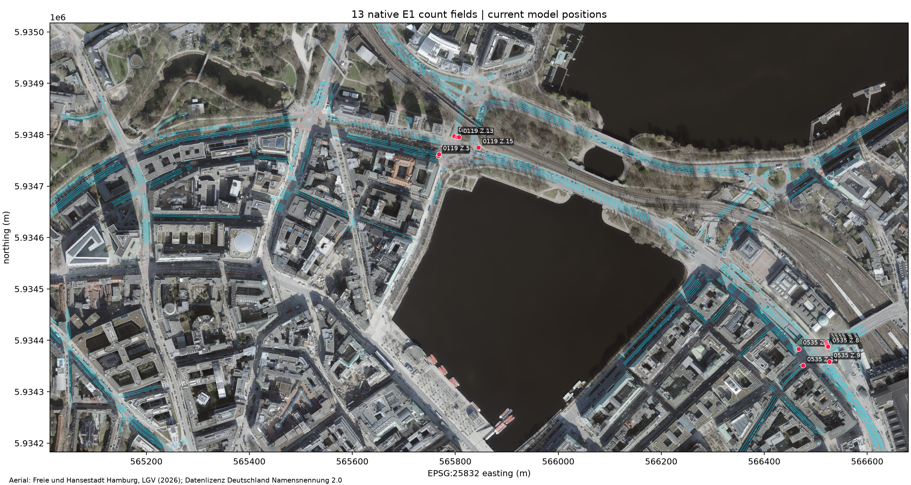
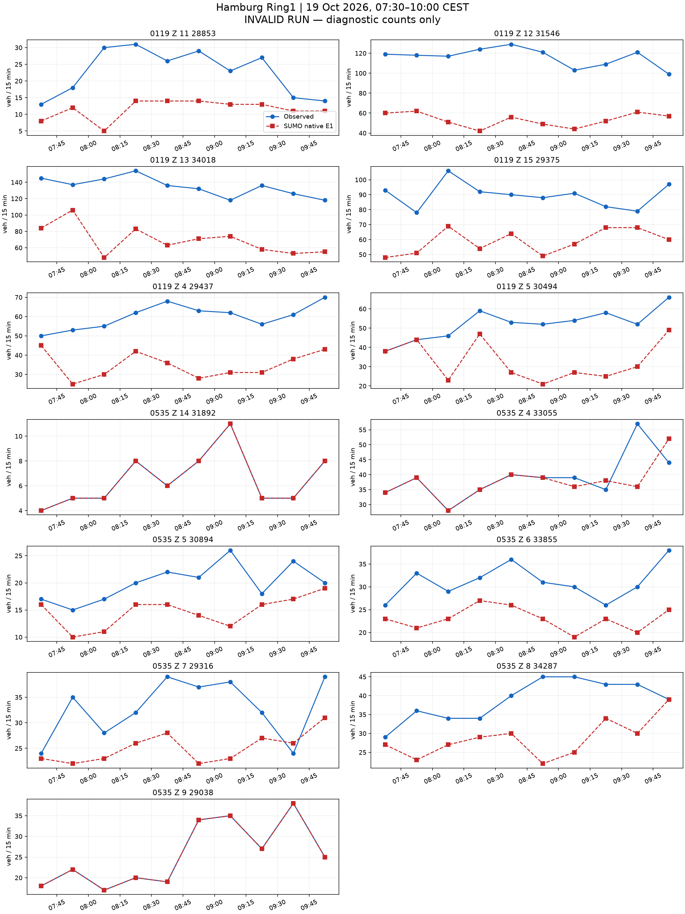
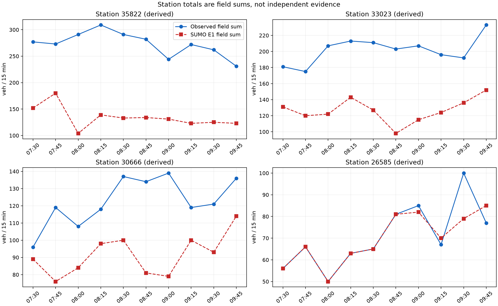

所有原生计数和运行有效性均保留。流程输出不等于零误差标定已完成。







{
"schema": "astra.hamburg-readme-final-results/v1",
"native_status": "invalid",
"valid_run": false,
"exact_count_fit": false,
"formal_field_metrics": null,
"diagnostic_field_MAE": 19.153846153846153,
"diagnostic_max_abs_error": 96,
"field_rows": 130,
"station_rows": 40,
"exact_station_rows": 6,
"missing_station_rows": 0,
"diagnostic_station_MAE": 62.15,
"diagnostic_station_max_abs_error": 187,
"missing_field_rows": 0,
"exact_field_rows": 29,
"completion": {
"loaded": 6687,
"inserted": 5094,
"arrived": 4772,
"running": 322,
"waiting": 1593,
"teleports": 0,
"collisions": 0,
"discarded": 0
},
"network_sha256": "cc04537494708721e1ad87409ab47cef249c3774dbaf9ed3ec7a7b01710672a4",
"control_sha256": "ea264c424f0638b711a748e83677ad6cc9077fea1ea3e3ec433e95fce3949bb1",
"measurement": "SUMO native E1 nVehContrib only",
"scenario": {
"schema": "astra.hamburg-readme-end-to-end/v1",
"status": "prepared",
"formal_result": false,
"exact_count_fit": false,
"vehicles": 6687,
"vehicle_km": 4893.006520102,
"field_bins": 130,
"station_bins": 40,
"profiles_used": 21,
"all_integer_rows_exact": true,
"network_sha256": "cc04537494708721e1ad87409ab47cef249c3774dbaf9ed3ec7a7b01710672a4",
"control_sha256": "ea264c424f0638b711a748e83677ad6cc9077fea1ea3e3ec433e95fce3949bb1",
"demand_prior": "One observed field per vehicle; no background traffic, customer-access roads, turnarounds, repeated roads or repeated junctions. Retain all observation rows.",
"time_prior": "Provisional rear-clear times spread within seconds 100–650 of each observed 900 s bin, with unchanged per-entry bin ceilings.",
"control_assumptions": "Official M2 alternative A, Z15 declared K9; 58 other OSM controllers retain native actuated programs. Declared 104/535 wrong-lane movements held red. Unsupported paths remain in the network and are excluded from planned lane paths.",
"unverified": "Native completion, lane realization and count fit remain to be measured.",
"geometry_source": "C:\\Users\\huqio\\Documents\\ASTRA-SUMO\\outputs\\ring1-native-fanout-curve-probe-20261021-v1\\candidate.net.xml",
"geometry_role": "Existing native 535 fanout-curve candidate; ordinary roads and complete legal movement permissions unchanged.",
"lane_waypoints": "One moving waypoint 7.5 m before the end of each assigned observation road, except short single-lane sections. Other roads have no waypoint.",
"removed_redundant_waypoints": 11091,
"geometry_validated_as_field_truth": false,
"lane_intention_assumptions": "Localized moving waypoints, plus native laneChangeMode=512 while the assigned detector lane contains the vehicle body before rear clearance. Restore each prior mode afterward. No detector count feedback.",
"demand_sha256": "6554bd935aa5aaaefaeb88576828492c2f601b2c45ac16e26fc816e1a50d7fb4",
"driver_source_sha256": "a30b2cb63055e2b8aed9de204fff0554aa43a51d023cb351a7ee0157dfd777b9",
"native_snapshot_directory": "C:\\Users\\huqio\\Documents\\ASTRA-SUMO\\outputs\\ring1-lane-section-hold-full-20261021-v2",
"claim_boundary": "Declared local driver lane intention, not measured natural lane choice. The 130 real field bins and 40 derived station bins remain unchanged. Native completion and exact count fit must be assessed separately."
},
"claim_boundary": "End-to-end workflow evidence. An invalid native run supplies diagnostics only and cannot establish accepted calibration."
}